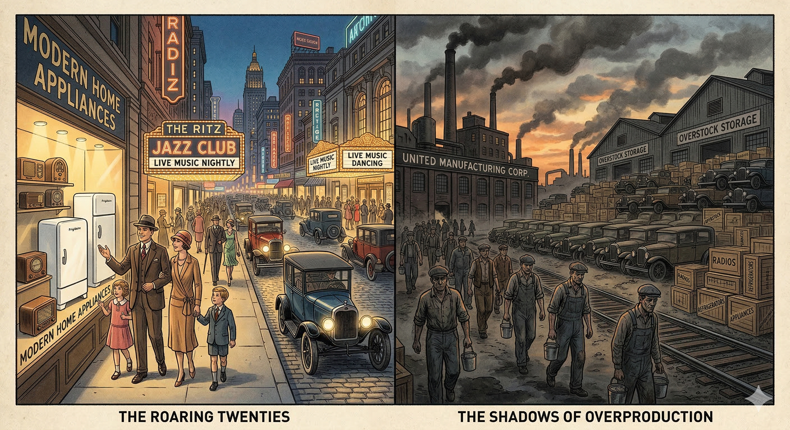
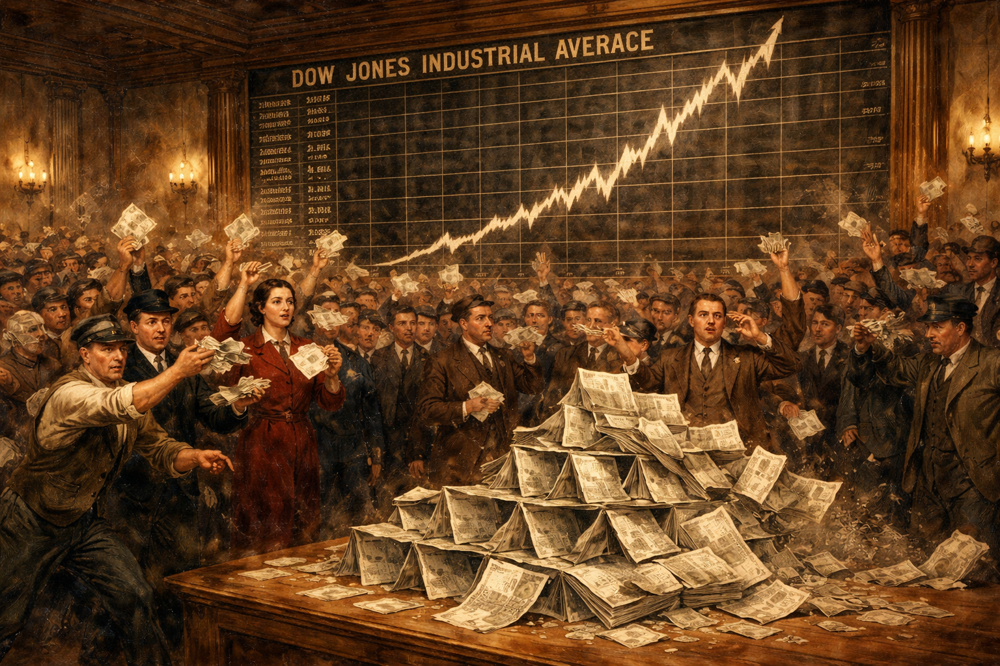
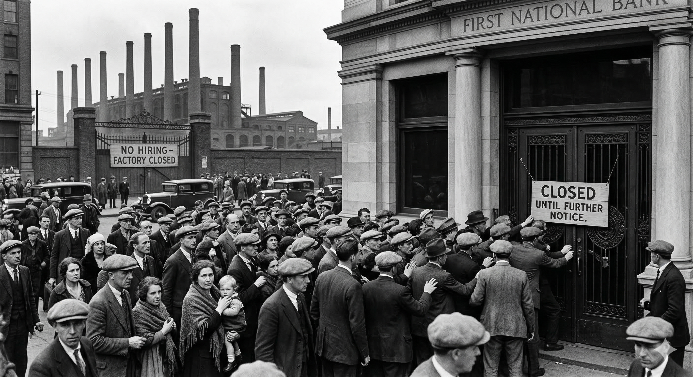
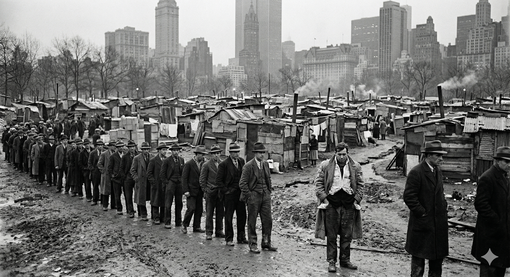
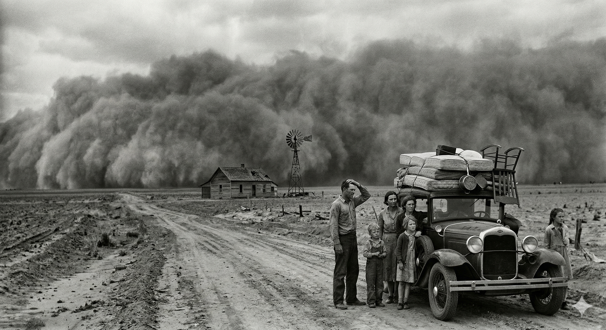
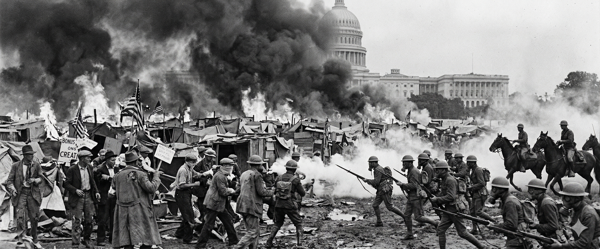
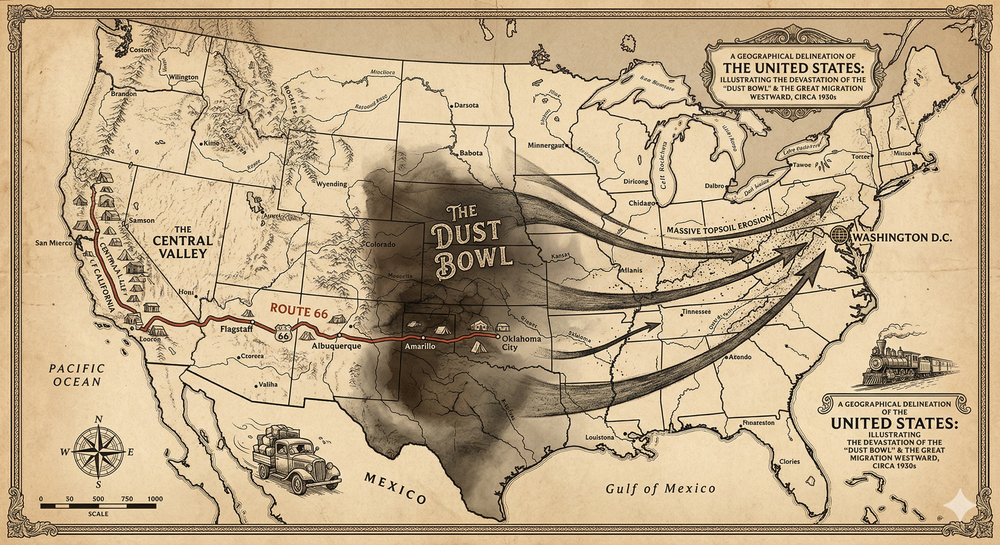

Core Objectives
- Analyze the multiple causes of the Great Crash of 1929, distinguishing between stock market speculation (buying on margin) and deeper structural flaws like wealth inequality.
- Trace the geographic and economic impact of the Dust Bowl on midwestern farmers and the resulting migration of "Okies" to California.
- Evaluate the social impact of the economic collapse, specifically the rise of "Hoovervilles" and the government's response to the Bonus Army march.
Key Terms
Black Tuesday | Buying on Margin | Speculation | Hawley-Smoot Tariff | Dust Bowl | Okies | Hoovervilles | The Bonus Army | Reconstruction Finance Corporation (RFC) | Breadlines | Great Depression | Dow Jones Industrial Average | Rugged Individualism
The Illusion of Prosperity

The rapid expansion of material wealth in the 1920s masked deep structural vulnerabilities within the American economy. While industrial productivity surged, the failure to proportionally increase worker wages created a severe gap in purchasing power, leading directly to the crisis of industrial overproduction and an overreliance on fragile installment credit.

A 1922 advertisement shows an American family gathered around a crystal radio, each listener leaning in to share the new technology of broadcast entertainment.
The 1920s are frequently remembered through the lens of the "Roaring Twenties," a decade characterized by jazz, flappers, and an seemingly endless rise in prosperity. To the average American living in 1928, the economy appeared to be an unstoppable engine of progress. Wages were rising for many, unemployment was consistently low, and a new era of consumerism was transforming daily life. Refrigerators, radios, and automobiles—once luxuries reserved for the extremely wealthy—were becoming commonplace in middle-class homes. This explosion of material wealth was supported by a booming stock market that reached new, record-breaking heights almost every day. However, beneath this glittering surface lay profound structural vulnerabilities. The prosperity of the 1920s was built on a foundation that was hollowing out, plagued by uneven wealth distribution, industrial overproduction, and a dangerous reliance on credit.
At the heart of these vulnerabilities was a staggering degree of wealth inequality. While the productivity of American industry grew by nearly 32 percent during the decade, the benefits of that growth were not shared among the workers who produced the goods. The income of the wealthiest one percent of the population skyrocketed by 75 percent, while the vast majority of Americans saw only modest gains. This meant that the top 0.1 percent of families had a combined income equal to that of the bottom 42 percent. This imbalance created a terminal problem for the economy: underconsumption. As factories became more efficient and churned out more products than ever before, the average American worker did not have enough purchasing power to buy them. By the late 1920s, warehouses were beginning to overflow with unsold cars, appliances, and textiles. When businesses can no longer sell their inventory, they stop expanding, they stop hiring, and eventually, they begin to lay off workers.

A 1924 advertisement for installment buying presents credit as an ordinary, practical way for Americans to purchase modern goods without paying the full cost up front.
This gap between production and consumption was temporarily bridged by the emergence of a new and dangerous financial tool: the installment plan. For the first time, Americans were encouraged to "buy now, pay later." Consumers could take home a new Ford or a vacuum cleaner by paying a small down payment and agreeing to monthly installments. While this fueled the industrial boom of the mid-twenties, it also meant that a massive portion of American households were deeply in debt. By 1929, roughly 75 percent of the population earned less than the $2,500 a year that was considered the minimum necessary for a decent standard of living. These families were living on the edge; any interruption in their income would lead to immediate financial ruin. This fragility was hidden by the easy availability of credit, but the day of reckoning was approaching.
The Mania of Speculation and Buying on Margin

Speculative fever drove the stock market to unprecedented heights, fueled by the dangerous practice of buying on margin. By purchasing shares with heavily borrowed funds and relying on rising prices to repay debt, investors created a volatile bubble that left the entire financial system exposed to catastrophic failure the moment stock values began to decline.

A dense crowd of curb brokers fills Wall Street in 1920, conducting fast-paced outdoor trading in a restless, competitive financial marketplace.
The most visible sign of the era's economic confidence was the stock market. Throughout the 1920s, the market had become a national obsession. It was no longer a place where professional investors carefully analyzed the long-term value of companies; it had become a laboratory for high-stakes gambling. Millions of ordinary Americans, from teachers to janitors, began pouring their savings into stocks, convinced that the market would continue to climb forever. This phenomenon, known as speculation, turned the market into a speculative bubble. Investors ignored the actual earnings of companies and focused solely on the hope that someone else would pay even more for their shares tomorrow. The Dow Jones Industrial Average, the primary measure of the stock market’s health, tripled in value between 1924 and September 1929.
This speculative fever was made possible by the practice of buying on margin. Under this system, an investor could purchase a stock by paying only a small percentage—sometimes as little as 10 percent—of its price in cash. The investor would then borrow the remaining 90 percent from a stockbroker, using the stock itself as collateral. This allowed individuals to control large amounts of stock with very little of their own money. As long as prices rose, the investor could sell the stock, pay back the loan, and keep a significant profit. However, the system was a house of cards. If stock prices fell, the broker would issue a "margin call," demanding that the investor pay back the loan immediately. Because most margin buyers had no cash reserves, they would be forced to sell their stocks to raise money, which would drive prices down even further, triggering even more margin calls.

A crowd gathers anxiously outside the New Stock Exchange after the market collapse, with faces turned toward the building and the street in confusion.
By September 1929, the market reached its peak and began to waver. Professional investors, sensing that the bubble was about to burst, began to quietly exit the market. On October 24, 1929—Black Thursday—the market took a sudden, terrifying dive. Panic began to spread as investors realized the "permanent plateau" of prosperity was a myth. A group of powerful bankers attempted to save the market by buying up large blocks of stock to stabilize prices, but their efforts provided only a temporary reprieve. On October 29, 1929—Black Tuesday—the bottom fell out completely. Shareholders frantically tried to sell 16.4 million shares, but there were no buyers. Billions of dollars in paper wealth simply evaporated in a single day. By the end of 1929, stock market losses exceeded $30 billion, more than the total amount the United States had spent on its involvement in World War I.
Section Checkpoint
1 of 41. How did the unequal distribution of wealth in the 1920s contribute directly to economic instability?
The Descent into the Great Depression

The crash of 1929 triggered a systemic collapse of the banking industry due to the fractional reserve system and the reckless investment of depositor funds in the stock market. As banks failed and life savings vanished, consumer spending evaporated, cutting off credit to businesses and initiating a vicious cycle of mass layoffs and factory closures.

Depositors stand in a long line outside a failed bank, hoping to recover savings that may already be gone.
While the crash of 1929 was a catastrophic event, it did not cause the Great Depression on its own. Instead, it acted as the spark that ignited the dry tinder of a fundamentally flawed economy. The crash shattered the public’s confidence and triggered a total collapse of the banking system. Banks had not only lent money to stock speculators, but they had also invested their depositors' savings directly into the market. When the market crashed, these investments became worthless. Fearing for their money, millions of Americans rushed to their local banks to withdraw their savings in what were known as "bank runs."
Because banks operate on a fractional reserve system—keeping only a small portion of their deposits in cash and lending out the rest—they could not meet the sudden demand for withdrawals. When a bank ran out of cash, it was forced to close its doors. Between 1929 and 1933, approximately 11,000 of the nation’s 25,000 banks failed. For the average family, this was the ultimate betrayal. The money they had saved for decades was simply gone, as there was no federal insurance for bank deposits at the time. This loss of savings further reduced consumer spending, deepening the economic gloom.
The banking collapse paralyzed industry. Without access to credit, businesses could not fund their daily operations or pay their employees. As demand for goods plummeted, factories were forced to cut production and lay off workers. This created a vicious cycle: unemployed workers could not afford to buy products, leading to more production cuts and more layoffs. By 1933, the national unemployment rate hit a staggering 25 percent, meaning one out of every four workers was without a job. In some industrial cities like Toledo, Ohio, the unemployment rate reached as high as 80 percent. For those who still had jobs, hours were often cut and wages were slashed by 30 or 40 percent. The Great Depression was not just an economic downturn; it was a complete breakdown of the exchange system that held American society together.

A political cartoon shows a bent-over “Workingman” staggering beneath an oversized dinner pail labeled “Tariff for Graft Only.”
The federal government’s initial attempts to handle the crisis only made matters worse. In 1930, Congress passed the Hawley-Smoot Tariff, which was intended to protect American farmers and manufacturers from foreign competition by raising import duties to the highest levels in U.S. history. The goal was to force Americans to buy American goods, thereby protecting jobs. However, the plan backfired spectacularly. European nations, already struggling with their own economic problems and debts from World War I, responded by raising their own tariffs on American exports. International trade plummeted by more than 40 percent in just a few years. Instead of protecting the American economy, the tariff choked off world trade and turned a severe national recession into a worldwide depression.
The Human Toll: Urban Suffering and Survival

The sudden loss of employment and savings forced millions of Americans into homelessness and reliance on charitable relief. The emergence of makeshift shantytowns in major cities highlighted the human cost of the economic breakdown and the profound psychological devastation experienced by a workforce previously accustomed to self-reliance.

Unemployed men wait in a breadline beneath the Brooklyn Bridge, bundled in coats and standing shoulder to shoulder for food.
As the economic machinery of the nation ground to a halt, the human cost became visible on every street corner. In cities like New York, Chicago, and Detroit, the struggle for survival took a physical form. Men who had once worn suits to office jobs were now seen standing in miles-long breadlines or waiting outside soup kitchens for a single bowl of watery broth. The loss of a job almost always meant the loss of a home. Families who could no longer pay rent or mortgages were evicted, their belongings tossed onto the sidewalk by moving crews. Homelessness became a national epidemic, and for many, the only option was to build a shelter in a shantytown.

A sprawling Hooverville in Portland, Oregon, stretches across the landscape in a patchwork of rough wooden shacks and salvaged materials.
These settlements, consisting of shacks made from scrap lumber, rusted tin, and cardboard boxes, sprang up in public parks and on the outskirts of cities across the country. In a bitter jab at the president whom many blamed for the crisis, these shantytowns were called Hoovervilles. Inside these camps, life was a daily battle against hunger, cold, and disease. People wrapped themselves in old newspapers—cynically called "Hoover blankets"—to stay warm, and many walked with their pockets turned out to show they had no money, a gesture known as "Hoover flags." The psychological impact was as devastating as the physical suffering. Men, in particular, felt a profound sense of shame at their inability to provide for their families, leading to a rise in desertion and suicide rates. The "rugged individual" of the 1920s was now a man begging for a nickel to buy a cup of coffee.
The burden of the Depression was not shared equally across the population. African Americans and other racial minorities faced even harsher conditions due to systemic discrimination. In many industries, the rule was "last hired, first fired," meaning that Black workers were the first to lose their jobs when the economy soured. By 1932, the unemployment rate for African Americans in some cities exceeded 50 percent, double the national average. Despite this, many private charities and local governments provided less aid to minority communities than to white ones. Racial tensions flared as white workers, desperate for any income, began to compete for the low-paying domestic and service jobs that had traditionally been held by Black and Latino workers. In the Southwest, this desperation led to "repatriation" campaigns, where hundreds of thousands of people of Mexican descent—including many who were U.S. citizens—were pressured or forcibly deported to Mexico to reduce the number of people competing for relief and jobs.
Section Checkpoint
1 of 51. Why did widespread "bank runs" occur immediately following the stock market crash?
Ecological Disaster: The Dust Bowl

Intensive farming practices that stripped the native deep-rooted prairie grasses, combined with severe, prolonged drought, transformed the Southern Plains into an ecological wasteland. The resulting topsoil erosion not only destroyed the agricultural foundation of the region but also triggered a massive demographic shift as displaced families fled westward in search of survival.
While urban Americans struggled with unemployment and homelessness, the residents of the Great Plains were facing a catastrophe of a different kind—one that combined economic failure with environmental collapse. For decades, farmers in the Southern Plains had been encouraged to plow up the native shortgrass prairie to plant wheat. During the wet years of the 1920s and the high demand of World War I, this seemed like a path to prosperity. However, the intensive farming practices removed the deep-rooted grasses that had held the soil in place for millennia. When a prolonged drought began in 1931, the exposed topsoil turned to powder.

A farmer and his children move through a wall of blowing dust as the sky darkens and the land disappears around them.
The result was the Dust Bowl, a massive environmental disaster that transformed parts of Kansas, Oklahoma, Texas, New Mexico, and Colorado into a wasteland. When the high winds characteristic of the Plains picked up, they carried away millions of tons of topsoil in terrifying clouds known as "black blizzards." These dust storms were so powerful they could black out the sun in the middle of the day, and the fine silt seeped into every crack of a farmhouse. People developed "dust pneumonia" from breathing the gritty air, and livestock choked to death as their lungs filled with sand. In 1934 alone, it was estimated that 350 million tons of soil were blown as far east as the Atlantic Ocean, even coating the desks of congressmen in Washington D.C. with the dust of the Plains.

Dust Bowl refugees pause beside an overloaded vehicle on the roadside near Bakersfield, California, surrounded by bundles and uncertainty.
The ecological collapse made farming impossible. Thousands of families watched as their crops withered and their land literally blew away. Compounding the disaster, the same banks that were failing in the East were foreclosing on farms in the West. Faced with starvation and homelessness, a massive migration began. Hundreds of thousands of people abandoned their homes and headed west toward California, following the ribbon of Route 66. These refugees were collectively known as Okies, a term that originally referred to Oklahomans but came to be a derogatory label for any "poor white" migrant from the Dust Bowl region.
The journey to California was an arduous trek in overloaded "jalopies"—old cars piled high with mattresses, pots, pans, and children. When they arrived in the "Golden State," however, they did not find the paradise they had imagined. California's agriculture was dominated by large-scale corporate farms that saw the migrants as a source of cheap, disposable labor. The Okies were forced to live in squalid "ditchbank" camps with no running water or sanitation. They faced intense hostility from local residents who feared they would drive down wages or strain local relief systems. This migration created a permanent shift in the demographics of the West, bringing the music, religion, and cultural attitudes of the rural South and Midwest to the Pacific coast, but it was a move born of utter desperation and loss.
Section Checkpoint
1 of 31. Which combination of factors directly caused the Dust Bowl?
The Limits of Rugged Individualism and the Bonus Army

The federal government's adherence to "rugged individualism" and reliance on failed volunteerism proved inadequate in the face of widespread suffering. The violent dispersal of veterans seeking early payment of their military bonuses shattered public trust and epitomized the profound disconnect between the administration's policies and the desperate reality of the citizenry.
Throughout the early years of the crisis, President Herbert Hoover remained committed to a philosophy he called rugged individualism. Hoover, who had risen from poverty to become a world-renowned engineer and humanitarian, believed that the American character was defined by self-reliance. He feared that if the federal government provided direct "doles" or relief payments to individuals, it would destroy their initiative and create a permanent dependence on the state. Instead, he advocated for a policy of "volunteerism," urging business leaders to maintain wages and charitable organizations to increase their efforts to help the poor. He believed the role of the government was to foster cooperation, not to dictate terms to the economy.
By 1932, it was clear that volunteerism was a failure. Private charities were bankrupt, and businesses could not maintain wages in the face of vanishing profits. Under intense pressure, Hoover finally moved toward more direct federal action, though he still avoided helping individuals directly. He supported the creation of the Reconstruction Finance Corporation (RFC), which provided up to $2 billion in emergency loans to banks, railroads, and insurance companies. Hoover’s theory was that by stabilizing the "top" of the economy, the benefits would eventually "trickle down" to the average worker as banks resumed lending and businesses resumed hiring. However, to the millions of people who were currently starving or living in Hoovervilles, the RFC looked like a government bailout for the wealthy while the poor were left to fend for themselves.

A wide view of the Bonus Army camp at Anacostia shows rows of tents and makeshift shelters built by World War I veterans and their families in Washington, D.C., during 1932.
The public’s growing resentment toward Hoover reached a violent climax with the arrival of the Bonus Army. In 1924, Congress had approved a "bonus" payment for World War I veterans, intended to compensate them for the wages they had lost while serving in the military. However, the money was not scheduled to be paid until 1945. As the Depression worsened, a group of veterans led by Walter Waters began to demand that the bonus be paid immediately. In the summer of 1932, roughly 15,000 to 20,000 veterans and their families marched on Washington D.C., setting up a massive camp on the Anacostia Flats across from the Capitol. They were determined to stay until the Patman Bill, which authorized the payment, was passed.

U.S. Army troops move against Bonus Army veterans during the July 1932 crackdown in Washington, turning a protest camp into a scene of forced removal.
Hoover initially allowed the veterans to stay and even provided them with some supplies, but he grew increasingly nervous as the group refused to leave after the Senate rejected the bill. Fearing the influence of radicals and communists within the camp, Hoover ordered the U.S. Army to clear the veterans out. Under the command of General Douglas MacArthur, troops used tanks, bayonets, and tear gas to drive the "Bonus Marchers" from their shacks. The camp was burned to the ground, and in the chaos, several people were injured and a baby died from tear gas inhalation. The image of the U.S. military attacking its own veterans—men who had fought for the country only a decade earlier—was a final, crushing blow to Hoover’s reputation. It symbolized a government that had turned its back on its people, paving the way for a revolutionary change in the election of 1932.
Section Checkpoint
1 of 31. Why was President Hoover initially reluctant to provide direct federal relief to unemployed individuals?
Quantitative & Spatial Analysis: Mapping History

The spatial dynamics of the 1930s ecological crisis dictated a massive, forced migration pattern. The intersection of geographic vulnerability on the Great Plains and the perceived agricultural promise of California established a migratory corridor that fundamentally altered the economic and cultural landscape of the Pacific Coast.
Location and Landscape
The Dust Bowl was a man-made and natural disaster centered in the Southern Great Plains. The "hardest hit" area covered roughly 100 million acres, centered on the panhandles of Texas and Oklahoma and adjacent parts of New Mexico, Colorado, and Kansas. This region is characterized by flat, treeless landscapes and a semi-arid climate, historically covered by deep-rooted shortgrass prairie that could survive periods of low rainfall.
Geography and Events
The disaster was triggered by a "perfect storm" of geography and human activity. Farmers, encouraged by high wheat prices and unusually wet years in the 1920s, plowed under millions of acres of this native grass. When the cyclical drought returned in 1931, there were no roots to hold the soil. The geography of the Plains—its vast, unobstructed stretches—allowed high winds to pick up the loose topsoil, creating "black blizzards" that reached as far east as New York City and Washington D.C. The lack of natural barriers like mountains or forests meant the wind could gain tremendous speed across the open terrain.
Regional Impact
The economic impact was total. By the mid-1930s, the region was losing an estimated $25 million in topsoil per day. This forced a mass exodus of nearly 2.5 million people. Migrants looked toward the "promised land" of California, following the geographic corridor of Route 66. This highway, stretching from Chicago to Los Angeles, became the "Mother Road" for the displaced. However, the geography of California’s Central Valley, while fertile, was already dominated by large-scale corporate farms, leaving the migrants to live in squalid "ditchbank" camps along the irrigation canals.
Broader Implications
The Dust Bowl taught the nation a harsh lesson about environmental stewardship. It led to the creation of the Soil Conservation Service and the planting of "shelterbelts"—massive rows of trees intended to act as windbreaks across the Plains to prevent future erosion. Long-term, the migration of the "Okies" permanently altered the demographics and culture of California and the West, bringing midwestern music, religion, and political attitudes to the Pacific coast.
Perspective Questions
Vocabulary Cloze Activity
Use the Word Bank to fill in the blanks in the narrative below. Each term will be used once.
During the 1920s, many Americans believed the economy would keep growing forever. The stock market became a national obsession, and people eagerly followed the rise of the , which seemed to confirm that prosperity had no ceiling. As confidence grew, many investors engaged in , buying stocks not because companies were stable, but because they hoped prices would continue rising.
This risky behavior became even more dangerous through , a practice in which investors purchased stocks with borrowed money. As long as prices climbed, profits seemed easy. But when panic struck the market in October 1929, the illusion collapsed. On , millions of shares were dumped onto the market, prices crashed, and billions of dollars in paper wealth vanished.
The crash did not create economic weakness by itself, but it helped trigger the , a devastating period of mass unemployment, bank failures, and social hardship. In response, President Herbert Hoover relied heavily on his belief in , the idea that Americans should solve problems through self-reliance rather than depending on direct federal aid.
As suffering worsened, many unemployed families lost their homes and were forced to live in makeshift settlements called . Others waited in long for food, revealing the human toll of the collapsing economy. Hoover eventually supported the creation of the , which gave emergency loans to banks and large businesses, though many Americans criticized it for helping institutions more than ordinary people.
At the same time, conditions in rural America became even worse. A combination of poor farming practices and drought created the , an ecological disaster that destroyed farmland across the Great Plains. Thousands of displaced farmers and their families migrated west to California, where they became known as .
Federal policy also deepened the crisis in some ways. The raised import taxes in an attempt to protect American businesses, but other countries retaliated, causing world trade to collapse. Public anger at Hoover reached a dramatic peak when , a group of World War I veterans demanding early bonus payments, marched on Washington and were violently removed by the U.S. Army.